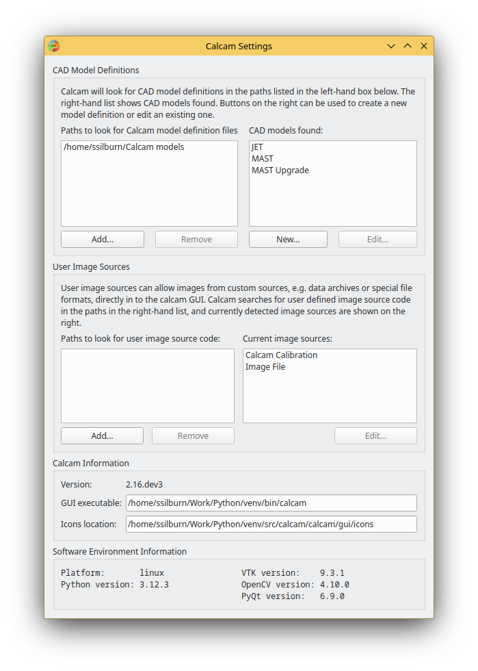

Calcam Settings
The calcam settings GUI allows setup of directories where Calcam should search for CAD model definitions and custom image source definitions; allows access to the CAD model editing tool and also shows software environment information. The settings window is shown below:
Search Paths
CAD Models
Calcam looks for CAD model definition (.ccm) files in a list of user-set directories which are set using the settings dialog. These are listed in the top-left list box in the settings window. If any of these directories do not exist or are unreadable, they will appear in red, otherwise they are listed in black. Directories to look for .ccm files can be added or removed using the buttons underneath the path list box. The CAD model search does not traverse sub-directories, so if a subdirectory of a directory already in the list contains more definition files, it must still be added separately.
CAD model definitions detected in the CAD model search paths are listed in the top-right list box in the settings window. These are the CAD models which will be available to choose from in Calcam GUI tools. You can select an existing model in this list and click the Edit… button under the CAD model list to open the CAD Model Definition Editor with that model, or use the New… button under the CAD model list to create a new model definition. The list is refreshed periodically, so creating or removing model definitions will be automatically reflected in the list.
Image Sources
User-defined image sources are a way to plug in custom Python code to Calcam for loading images to be calibrated. By default, Calcam can load images from most common image file formats, however it may be convenient to be able to load images e.g. from an experimental data server or custom file format. This is achieved by writing custom image source code, which takes the form of a python module or package. Details of how to write a custom image source are given here.
Calcam searches for user-written image sources in the list of paths displayed in the bottom-left list box in the Settings window. If any of these directories do not exist or are unreadable, they will appear in red, otherwise they are listed in black. Directories to look for image source python code can be added or removed using the buttons underneath the path list box.
Note
The image source search does not traverse sub-directories, so if a subdirectory of a directory already in the list contains more image sources, it must still be added separately.
The list box in the bottom-right of the Settings window shows all python modules and packages detected in the image source search paths. If these are working and can be used as image sources, the name of the corresponding image source is displayed in black. If there is a python package / module detected but it cannot be identified as a working image source, it will be shown in read. Hovering the mouse over an item listed in red will show the error encountered when testing that image source. In addition to user created image sources, the two Calcam built-in image sources: loading from image files or calcam calibration files, are always shown.
Custom image sources can be selected by clicking them in the image source list, which will enable the Edit… button under the image source list. Clicking this button will open the python file or folder corresponding to the image source. The image source list is periodically refreshed, so if you make changes to the image source code e.g. to try and fix a non-working image source, or creating a new image source in one of the search paths, this change will be reflected in the list.
Environment Information
At the bottom of the settings window, information about the current software environment is displayed. This includes the OS platform, current versions of Python and Calcam, and the most critical dependencies: VTK, OpenCV and PyQt. This information can be useful when troubleshooting bugs or unexpected behaviour of the software.